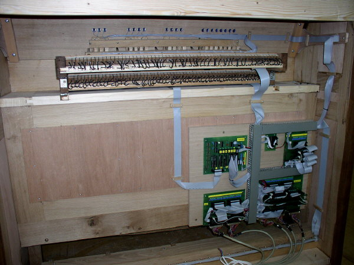

Vzdušnice.Základem, jakýmsi „srdcem“ varhan je vzdušnice. Z vnějšího pohledu se jedná o plochou skříň, která však v sobě ukrývá složitá zařízení, která „přidělují vzduch jednotlivým píšťalám nástroje podle vůle varhaníka“. Brtnické varhany mají vzdušnice tři – jednu pro první manuál a dvě
pro druhý manuál a pedál. Vzdušnice prvního manuálu je zásuvková (rejstříky
jsou ovládány pomocí zásuvek). Ovládání otevírání ventilů je elektropneumatické
– elektrický impuls od hracího stolu sepne elektromagnet, který otevře
malý ventil (cívku), přes který se vypustí vzduch z většího klínového
míšku. Ten splaskne a pomocí tahacího drátu otevře větší – tónový ventil,
vzduch z ventilové komory pak takto vzniklým otvorem může proudit do
tónové kancely a přes otvory v zásuvkách a píšťalnicích dále až do píšťal
zapnutých rejstříků: |
Zařízení (magnet, cívka, míšek, ventil…), nakreslená
na předchozí animaci se ve vzdušnici opakují tolikrát, kolik je tónů,
tedy 61x. Míšky jsou v diskantu z prostorových důvodů ve dvou řadách nad
sebou. I když se celé ovládání může jevit jako složité a těžkopádné, chod
vzdušnice je velmi rychlý a přesný. Pneumatický mezičlánek je použit z
důvodu potřebné větší dráhy a síly pro otevření ventilu, pokud by byl
ventil ovládán elektromagnetem přímo, bylo by potřeba podstatně většího
magnetu i větší energie pro jeho sepnutí. |
| Pohled do otevřené ventilové komory (bas). Dole klínové míšky, nahoře tónové ventily. |
| Ventilová komora v diskantu má z prostorových důvodů míšky ve dvou řadách nad sebou. |
Páčkové elektromagnety (Laukhuff) v diskantu a v basu. V basové části je mezi magnet a míšek vloženo ještě pneumatické mezirelé.
|
Na vzdušnici prvního manuálu je 610 píšťal (přesněji 601) v desíti
řadách (v sedmi rejstřících, jeden rejstřík je dvouřadý a jeden třířadý).
Drobnou výjimku totiž tvoří prvních 9 píšťal Principálu, které jsou
umístěny v prospektu a se vzdušnicí propojeny pomocí ohebných konduktů
(hadic).
|
Uspořádání píšťal na vzdušnici a detail malých píšťal. |

| Vzdušnice pedálu a druhého manuálu je skříňová (Unit). Stojí na ní jedna řada píšťal. Tok vzduchu do píšťal ovládají ventily tvořené membránou (malým míškem) z jemné kůže. Systém ovládání je opět „výpustný“ – ventil se otevře díky vypuštění stlačeného vzduchu z membrány pomocí malého elektromagnetického ventilu (tzv. Reisnerovy magnety“). |
Řez skříňovou vzdušnicí (jedním tónem) v klidu a při znění tónu. |
Elektromagnet ventilu po sepnutí proudu do cívky přitáhne
kovový kroužek, který představuje aktivní člen. Kroužek uzavře otvor
pod cívkou (1) a otevře výfukový otvor (2). Kanálkem (3) unikne vzduch
zpod membrány, ta splaskne a pomocí k ní připevněného ventilu otevře
otvor do nohy píšťaly, která zazní. Po vypnutí proudu kroužek vlastní
vahou odpadne, uzavře výfukový otvor (2) a přes otvor (1) a kanálek
(3) se membrána opět naplní stlačeným vzduchem ze vzduchovodu. Ventil
uzavře přívod vzduchu do píšťaly a ta se odmlčí. |

Vzdušnice druhého manuálu a pedálu zespodu.
|
Prospekt. |

Prospekt varhan v Brtnici. Píšťaly v průčelí varhanní skříně tvoří prospekt.
Jejich rozmístění většinou dotváří výtvarný záměr stavitele a ze zvukového
hlediska by rozmístění píšťal mělo alespoň přibližně sledovat sled
tónů na vzdušnici. U varhan v Brtnici zůstala významná část prospektu
němá. Varhanáře k tomu vedlo několik důvodů: |

Druhým důvodem pro ponechání části prospektu pouze
pro dekoraci bylo chromatické uspořádání tónů na nové vzdušnici. Kondukty
k píšťalám v prospektu by byly příliš dlouhé a pro správný zvuk by bylo
nutné jejich nahrazení prospektovou vzdušnicí se samostatným ovládáním
(vzdušnice pod prospektem pouze pro píšťaly v něm umístěné). Vzhledem
k nízké kvalitě píšťal (viz výše) toto řešení nebylo použito a byla
dána přednost umístění aktivních píšťal přímo na vzdušnici. |
Hrací stůl a traktura. |

|
Varhaník nástroj ovládá pomocí hracího stolu. Zde jsou klaviatury pro ruce (manuály) a pro nohy (pedál), ovládání rejstříků (sklopky) a pomocná zařízení (kolektivy a volná kombinace). Hrací stůl je s ventily ve vzdušnicích propojen pomocí traktury. Ta je u tohoto nástroje elektrická (zadavatel požadoval pohyblivost hracího stolu po ploše kůru z důvodu přizpůsobení prostorové dispozice přítomnosti sboru či orchestru, což lze splnit jen při propojení pomocí ohebného kabelu, mechanické či pneumatické řešení nepřipadá v tomto případě v úvahu). Každá akce (stisk klávesy, tlačítka, překlopení sklopky) je převedena na elektrický signál, který je zpracován pomocí logických funkcí (splnění různých podmínek typu „pokud je stisknuta klávesa c a zapnut rejstřík xy a není zapnuta spojka yz, pak požadovat otevření ventilu č. 37“). Příslušný impuls je od stolu veden 188 žilovým ohebným kabelem do skříně nástroje, kde řídí výkonový člen, který pak elektricky ovládá odpovídající elektromagnety pod vzdušnicí.
|

|
Řídicími členy traktury jsou kontakty. Ty po stisku klávesy, tlačítka či pedálu uzavírají příslušný elektrický obvod a informují tak o tomto řídicím impulsu logické obvody v traktuře. Na horním obrázku jsou kontakty pod klávesami, na dolním kontaktní svazky u pedálové klaviatury. V obou případech je jeden z kontaktů opatřen regulací polohy, umožňuje tak precizní regulaci okamžiku sepnutí kontaktu v závislosti na hloubce stisku klávesy. Stejně (tedy kontaktně) jsou ovládány i rejstříky pomocí kontaktů
pod sklopkou. Přepínání mezi ručními rejstříky, navolenou volnou kombinací
a přednastavenými kolektivy s výrazně odstupňovanou dynamikou se pak
děje pomocí tlačítek pod prvním manuálem. |

Pohled do otevřeného hracího stolu zezadu.Zcela
nahoře jsou vidět spínače volné kombinace, pod nimi sklopky a klávesy
manuálů. Celá elektronika traktury (signálová logická část) je na několika
deskách ve spodní části stolu: |

Elektronika traktury (propojené desky, ještě před
vysvazkováním a zakrytováním kabelových kanálů). Vlevo nahoře deska
registratury (přepínání rejstříků, kolektivy a kombinace), vpravo nahoře
pedál, vlevo dole I. manuál a vpravo dole II. manuál (Unit). |
Deska registratury a detail logiky kolektivů. |
Pohled na diodovou matici (deska Unit spojky 2’). |
 Z
důvodu odolnosti proti přepětí (časté bouřky v místě provozu, problematická
napájecí síť) a snadné opravitelnosti i po létech provozu nejsou v traktuře
použity sice moderní, přesto však po čase problematicky nahraditelné
součástky (např. obvody s vyšší integrací a mikroprocesory). Celá logika
řízení je tak řešena poměrně konzervativně (odporovo – diodová logika).
Jedná se o kompromis mezi podmínkou bezproblémové dlouhé životnosti
a použití technických řešení na úrovni doby vzniku nástroje. Vzhledem
k tomu, že varhany mají životnost počítanou na desítky až stovky let,
nemohou obsahovat součásti, jejichž fyzická životnost je cca dvacetiletá
(paměti EPROM) a morální ještě kratší (mikropočítač). Z
důvodu odolnosti proti přepětí (časté bouřky v místě provozu, problematická
napájecí síť) a snadné opravitelnosti i po létech provozu nejsou v traktuře
použity sice moderní, přesto však po čase problematicky nahraditelné
součástky (např. obvody s vyšší integrací a mikroprocesory). Celá logika
řízení je tak řešena poměrně konzervativně (odporovo – diodová logika).
Jedná se o kompromis mezi podmínkou bezproblémové dlouhé životnosti
a použití technických řešení na úrovni doby vzniku nástroje. Vzhledem
k tomu, že varhany mají životnost počítanou na desítky až stovky let,
nemohou obsahovat součásti, jejichž fyzická životnost je cca dvacetiletá
(paměti EPROM) a morální ještě kratší (mikropočítač). Logickou část traktury tak tvoří 1206 diod ve funkci obvodů logických součinů AND (dalších 158 diod je ve výkonové části u elektromagnetů), 1032 odporů, 380 LED kontrolek, 13 kontaktních relé, konektory a kabely. Ve výkonové části je 160 výkonových darlingtonových tranzistorů v integrovaných polích. V deskách plošných spojů je přes 10 tisíc otvorů… |
Výkonový modul – deska tranzistorových spínačů.
|
Na další stránce naleznete malou reportáž z průběhu jeho stavby, na předchozí úvod a dispozici. Na samostatné stránce pak několik fotografií a dispozici barokních varhan v zámeckém kostele blahoslavené Juliany. ©2005 - Ing. Petr Bernat. |


 U původních varhan „hrály“ všechny píšťaly v prospektu, jejich zvuk
však byl poměrně problémový. Vzduch byl ze vzdušnice k píšťalám přiveden
poměrně dlouhými kondukty, píšťaly měly značné naddélky (z výtvarných
důvodů prodloužená nefunkční část v horní části píšťaly), které znemožňovaly
přesnou intonaci. Kvalita píšťal byla nevyrovnaná, provedení především
větších (zinkových) poměrně nekvalitní (nepřesné švy, velmi slabé
jádro…). Proto byly píšťaly nahrazeny novými jen ve středním poli
prospektu a se vzdušnicí propojeny ohebnými kondukty.
U původních varhan „hrály“ všechny píšťaly v prospektu, jejich zvuk
však byl poměrně problémový. Vzduch byl ze vzdušnice k píšťalám přiveden
poměrně dlouhými kondukty, píšťaly měly značné naddélky (z výtvarných
důvodů prodloužená nefunkční část v horní části píšťaly), které znemožňovaly
přesnou intonaci. Kvalita píšťal byla nevyrovnaná, provedení především
větších (zinkových) poměrně nekvalitní (nepřesné švy, velmi slabé
jádro…). Proto byly píšťaly nahrazeny novými jen ve středním poli
prospektu a se vzdušnicí propojeny ohebnými kondukty. Řez kabelem, propojujícím hrací stůl se skříní nástroje.
Řez kabelem, propojujícím hrací stůl se skříní nástroje.
 Výkonová
část traktury je umístěna v postamentu varhanní skříně přímo pod vzdušnicí.
Kabelem od hracího stolu tak přicházejí jen řídicí impulsy a vlastní
ovládání magnetů se děje na krátkou vzdálenost uvnitř varhanní skříně.
Je to výhodnější z hlediska menších úbytků napětí na kratších vodičích
(i tak je propojení se vzdušnicí realizováno téměř jedním kilometrem
vodiče), propojení hracího stolu s nástrojem může pak být provedeno
podstatně tenčím kabelem (vnější průměr pancíře je 32 mm) atd.
Výkonová
část traktury je umístěna v postamentu varhanní skříně přímo pod vzdušnicí.
Kabelem od hracího stolu tak přicházejí jen řídicí impulsy a vlastní
ovládání magnetů se děje na krátkou vzdálenost uvnitř varhanní skříně.
Je to výhodnější z hlediska menších úbytků napětí na kratších vodičích
(i tak je propojení se vzdušnicí realizováno téměř jedním kilometrem
vodiče), propojení hracího stolu s nástrojem může pak být provedeno
podstatně tenčím kabelem (vnější průměr pancíře je 32 mm) atd.